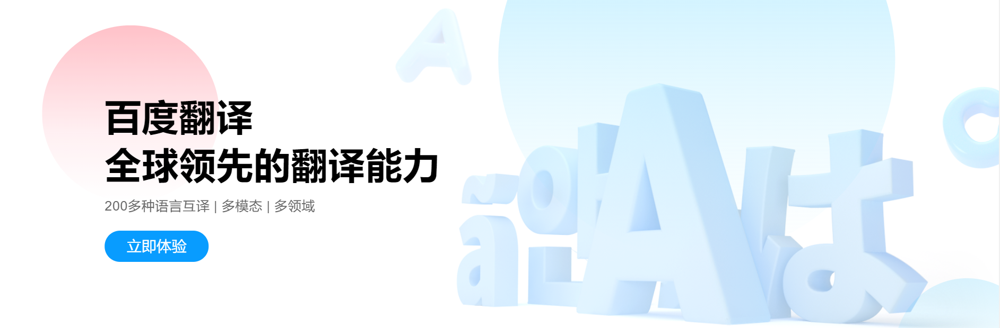

百度翻译
感觉这个软件功能确实很强大啊，来看看吧
1.拍照翻译，秒现结果
支持17种语言，简单一拍，
翻译结果立刻实景展现
2.对话翻译，畅想沟通
体验语音同声翻译，即说即译，
让沟通更加方便快捷
3.权威词典，海量收录
提供2100万条权威词典数据，
海量网络释义、百度百科等结果
4.口语评测，发音地道
专业发音测评，智能打分，
塑造标准英语发音
5.实用口语，出国必备
境外游常见场景，吃住游购全覆盖，
不懂外语也能聊
6.每日精选，优质资讯
每日精选双语阅读，独家优质翻译，
推你所想，荐你所爱
感觉这个软件功能确实很强大啊，来看看吧
1.拍照翻译，秒现结果
支持17种语言，简单一拍，
翻译结果立刻实景展现
2.对话翻译，畅想沟通
体验语音同声翻译，即说即译，
让沟通更加方便快捷
3.权威词典，海量收录
提供2100万条权威词典数据，
海量网络释义、百度百科等结果
4.口语评测，发音地道
专业发音测评，智能打分，
塑造标准英语发音
5.实用口语，出国必备
境外游常见场景，吃住游购全覆盖，
不懂外语也能聊
6.每日精选，优质资讯
每日精选双语阅读，独家优质翻译，
推你所想，荐你所爱

百度翻译依托互联网数据资源和自然语言处理技术优势，致力于帮助用户跨越语言鸿沟，方便快捷地获取信息和服务。支持全球200多个语言互译，包括中文（简体）、英语、日语、韩语、西班牙语、泰语、法语和阿拉伯语等，覆盖4万多个翻译方向，通过开放平台支持超过40万企业和个人开发者，是国内市场份额第一的翻译类产品。
百度翻译拥有网页、APP、百度小程序等多种产品形态，此外还针对开发者提供开放云接口服务，日均响应千亿字符翻译请求。除文本、网页翻译外，推出了文档翻译、图片翻译、拍照翻译、语音翻译等多模态的翻译功能，以及海量例句、权威词典等丰富的外语资源，实用口语、英语跟读、英语短视频、AI背单词等外语学习功能，满足用户多样性的翻译需求和学习需求。
针对具有音频转写、字幕翻译需求的用户，推出AI视频翻译一键生成双语字幕；针对个人学习、企业内部参考等需求，结合机器的快捷与人工的精准优势，提供“AI翻译+人工校对”服务；针对商业发布、播出级影视翻译制作需求，提供一对一定制方案。
针对有会议同传需求的用户，推出百度AI同传会议版，支持线下、线上多种会议形式，提供双语字幕投屏、手机边听边看、行业术语定制、查看会议记录等功能；针对看视频、听音频、在线会议交流等场景，推出了百度AI同传助手，能够拾取电脑声音，实时生成同传双语字幕，辅助跨语言的信息获取和交流。